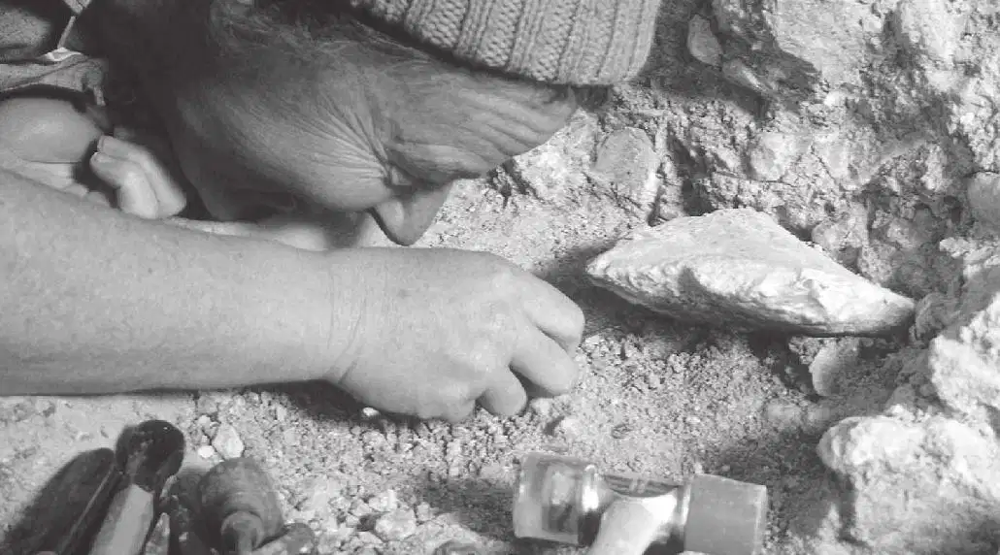
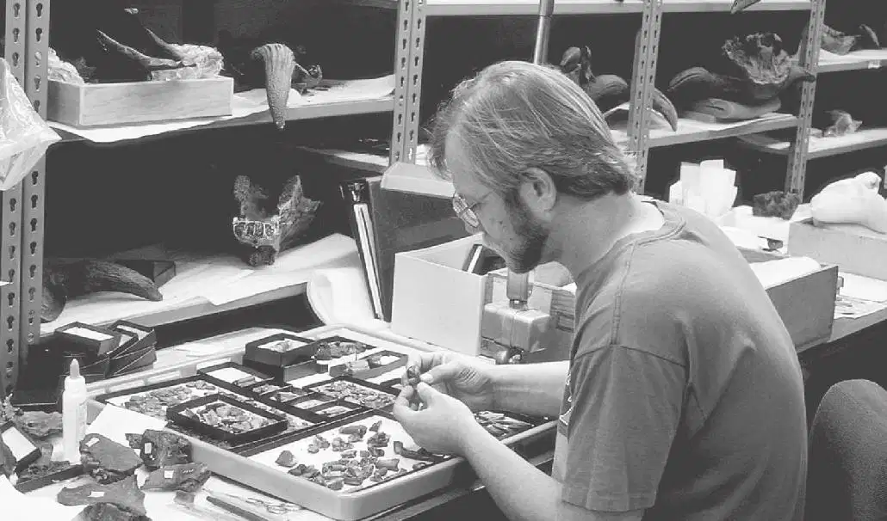
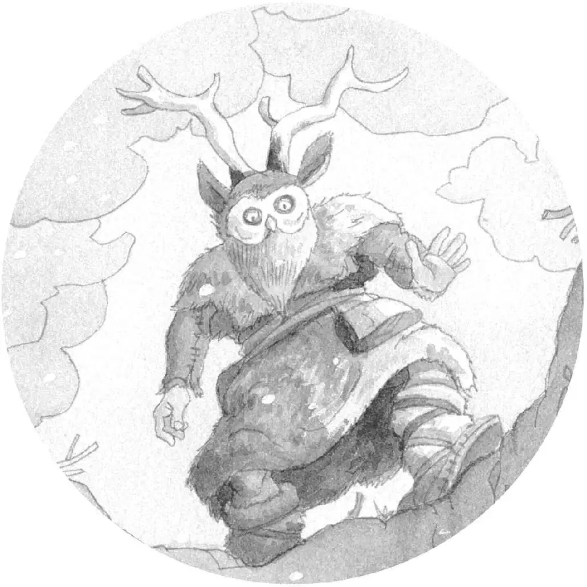

挖掘历史的科学家们
在英语中，古人类学家进行考古挖掘的地点叫作“dig”。

古人类学家的主要工作是挖掘古迹、研究古代人类。当他们找到某个古人类遗址时，就在其中寻找有用的资料，如工具、陶器、武器，还有人类遗留下的其他东西，如骨骼。在进行考古挖掘的时候，古人类学家一定要非常小心，不能破坏了这些东西，因为它们包含了关于过去的大量信息。

古生物学家主要研究古代的植物和动物。通过研究动植物的化石，他们能了解过去地球上的自然环境。
古人类学家和古生物学家的工作非常相似。当一个古代遗址被发现后，他们就到现场进行挖掘、拍照、画图，记录下所发现的东西。他们堪称“历史界的福尔摩斯”，能帮助我们揭开一桩又一桩的历史谜案。
